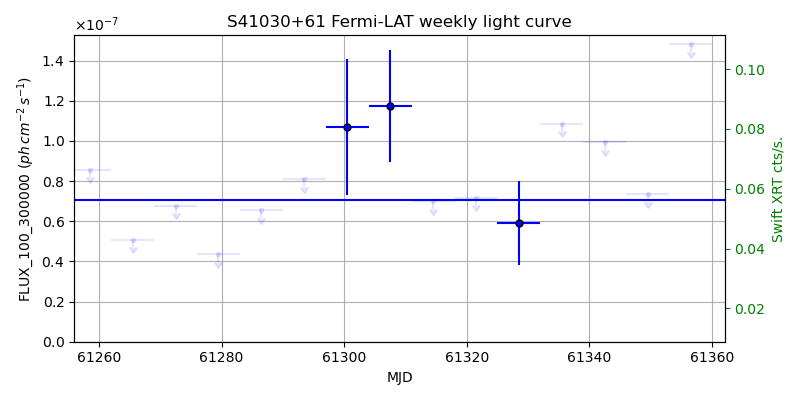
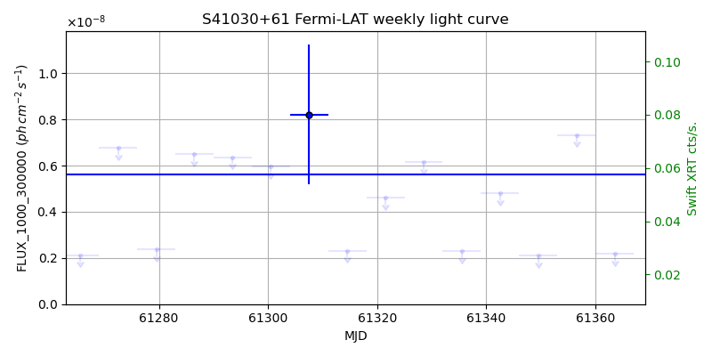

LAT Lightcurve site: https://fermi.gsfc.nasa.gov/ssc/data/access/lat/msl_lc/source/S4_1030p61
Swift site: https://www.swift.psu.edu/monitoring/source.php?source=S41030+61
NED: Query
Time of last update of this page: UT: 2026-11-28 16:22 (MJD: 61372.682)
| Property | Value |
|---|---|
| R.A. | 10:33:51.36 |
| Dec. | 60:51:07.2 |
| z | 1.408 |
| 3FGL SpectrumType | LogParabola |
| 3FGL PL Index | |
| 3FGL Flux_100_300000 | 7.06e-08 1 / (s cm2) |
| 3FGL Flux_1000_300000 | 5.62e-09 1 / (s cm2) |
| 3FGL Flux >200 GeV | 2.76e-12 1 / (s cm2) |
| 3FGL Extrap. Crab >200 GeV | 0.01 |
| 3FGL Flux After EBL Absorption >200GeV | 8.77e-15 1 / (s cm2) |
| 3FGL EBL Crab Fraction >200GeV | 0.00 |
| MJD | dMJD | Flux | dFlux | Frac3FGL | FracCrab>200GeV | EBLFracCrab>200GeV |
|---|---|---|---|---|---|---|
| 61367.50 | 0.50 | 3.19e-07 | 0.00e+00 | 0.00 | 0.00 | 0.00 |
| 61368.50 | 0.50 | 2.72e-07 | 0.00e+00 | 0.00 | 0.00 | 0.00 |
| 61369.50 | 0.50 | 1.57e-07 | 0.00e+00 | 0.00 | 0.00 | 0.00 |
| 61370.50 | 0.50 | 2.31e-07 | 0.00e+00 | 0.00 | 0.00 | 0.00 |
| 61371.50 | 0.50 | 1.29e-07 | 0.00e+00 | 0.00 | 0.00 | 0.00 |

| MJD | dMJD | Flux | dFlux | Frac3FGL | FracCrab>200GeV | EBLFracCrab>200GeV |
|---|---|---|---|---|---|---|
| 61335.50 | 3.50 | 1.09e-07 | 0.00e+00 | 0.00 | 0.00 | 0.00 |
| 61342.50 | 3.50 | 9.93e-08 | 0.00e+00 | 0.00 | 0.00 | 0.00 |
| 61349.50 | 3.50 | 7.36e-08 | 0.00e+00 | 0.00 | 0.00 | 0.00 |
| 61356.50 | 3.50 | 1.48e-07 | 0.00e+00 | 0.00 | 0.00 | 0.00 |
| 61363.50 | 3.50 | 1.00e-07 | 0.00e+00 | 0.00 | 0.00 | 0.00 |

| MJD | dMJD | Flux | dFlux | Frac3FGL | FracCrab>200GeV | EBLFracCrab>200GeV |
|---|---|---|---|---|---|---|
| 61367.50 | 0.50 | 1.23e-08 | 0.00e+00 | 0.00 | 0.00 | 0.00 |
| 61368.50 | 0.50 | 1.01e-08 | 0.00e+00 | 0.00 | 0.00 | 0.00 |
| 61369.50 | 0.50 | 7.81e-09 | 0.00e+00 | 0.00 | 0.00 | 0.00 |
| 61370.50 | 0.50 | 8.29e-09 | 0.00e+00 | 0.00 | 0.00 | 0.00 |
| 61371.50 | 0.50 | 9.35e-09 | 0.00e+00 | 0.00 | 0.00 | 0.00 |

| MJD | dMJD | Flux | dFlux | Frac3FGL | FracCrab>200GeV | EBLFracCrab>200GeV |
|---|---|---|---|---|---|---|
| 61335.50 | 3.50 | 2.30e-09 | 0.00e+00 | 0.00 | 0.00 | 0.00 |
| 61342.50 | 3.50 | 4.82e-09 | 0.00e+00 | 0.00 | 0.00 | 0.00 |
| 61349.50 | 3.50 | 2.11e-09 | 0.00e+00 | 0.00 | 0.00 | 0.00 |
| 61356.50 | 3.50 | 7.33e-09 | 0.00e+00 | 0.00 | 0.00 | 0.00 |
| 61363.50 | 3.50 | 2.19e-09 | 0.00e+00 | 0.00 | 0.00 | 0.00 |
--------------------------------------------------------- Using user-supplied coords: 10:33:51.36 60:51:07.2 2000 --------------------------------------------------------- FLWO UT night of: 2026-11-29 Local Sid. @ Midnight: 04:08 Sunset (-15.0) (local, UT): 18:31 01:31 Sunrise (-15.0) (local, UT): 05:53 12:53 Moonrise (local, UT): 21:57 04:57 Moonset (local, UT): Moon phase: 0.72 --------------------------------------------------------- AzTime LSID UT Obj_el Obj_az Mn_el Mn_az Sep. --------------------------------------------------------- 18:31 22:39 01:31 2.6 0.4 -32.9 32.1 46.2 19:01 23:09 02:01 2.9 4.1 -29.4 38.9 46.2 19:31 23:39 02:31 3.5 7.7 -25.4 45.0 46.2 20:01 00:09 03:01 4.5 11.3 -21.0 50.6 46.1 20:31 00:39 03:31 5.9 14.7 -16.2 55.6 46.1 21:01 01:09 04:01 7.7 17.9 -11.1 60.2 46.1 21:31 01:39 04:31 9.8 20.9 -5.4 64.5 46.1 22:01 02:09 05:01 12.2 23.7 0.4 68.5 46.0 22:31 02:39 05:31 14.9 26.3 5.8 72.2 46.0 23:01 03:10 06:01 17.9 28.6 11.6 75.8 46.0 23:31 03:40 06:31 21.0 30.6 17.5 79.4 46.0 00:01 04:10 07:01 24.4 32.2 23.6 82.9 46.0 00:31 04:40 07:31 27.8 33.6 29.7 86.5 46.0 01:01 05:10 08:01 31.4 34.5 35.8 90.3 46.0 01:31 05:40 08:31 35.1 35.0 42.0 94.4 46.1 02:01 06:10 09:01 38.7 35.0 48.1 99.1 46.1 02:31 06:40 09:31 42.4 34.5 54.2 104.7 46.1 03:01 07:10 10:01 46.0 33.3 60.1 111.7 46.2 03:31 07:40 10:31 49.4 31.3 65.6 121.1 46.2 04:01 08:10 11:01 52.6 28.4 70.5 134.7 46.3 04:31 08:40 11:31 55.4 24.4 74.0 154.7 46.3 05:01 09:11 12:01 57.8 19.4 75.2 181.1 46.4 05:31 09:41 12:31 59.6 13.2 73.6 206.8 46.5 05:53 10:02 12:53 60.5 8.1 71.0 221.2 46.5 --------------------------------------------------------- Dark hours >55 deg.: 0.00